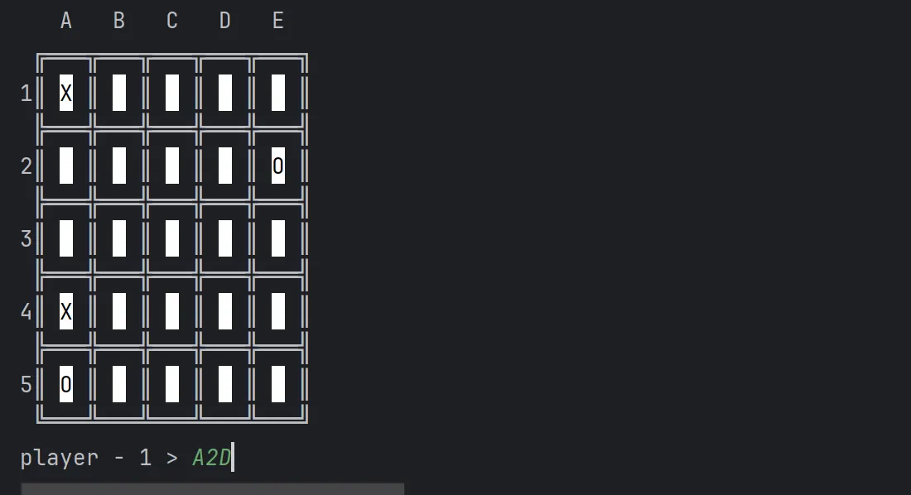

SAE S2 · autre projet
Jeu de plateau Quixo en Java, architecture MVC
Jeu complet en console, construit sur la bibliothèque imposée Boardifier.
- Semestre
- S2
- Année
- 2025
- Équipe
- Individuel
- Langage
- Java
01Le projet
Jeu de plateau en Java, en console, en architecture MVC, construit sur la bibliothèque imposée Boardifier. Les joueurs saisissent des commandes comme A2D, qui sont validées avant chaque coup. J'ai redéfini les classes de rendu de Boardifier par héritage et polymorphisme, pour personnaliser l'affichage sans modifier la bibliothèque.

Représentation textuelle du plateau 5 × 5 : les joueurs saisissent des commandes comme A2D (case de départ + direction). Chaque saisie est validée avant d'être jouée, avec un message clair si elle est invalide. L'affichage des cases et des pions vient de classes Boardifier redéfinies par héritage.